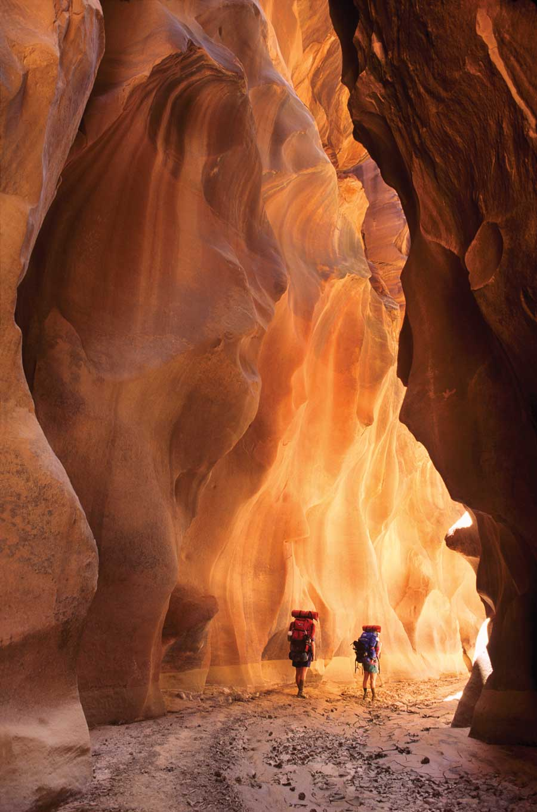
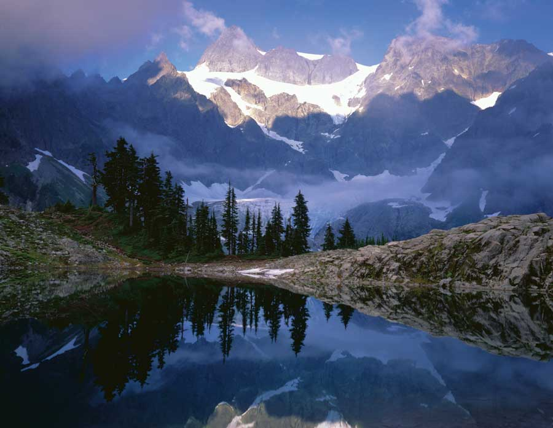
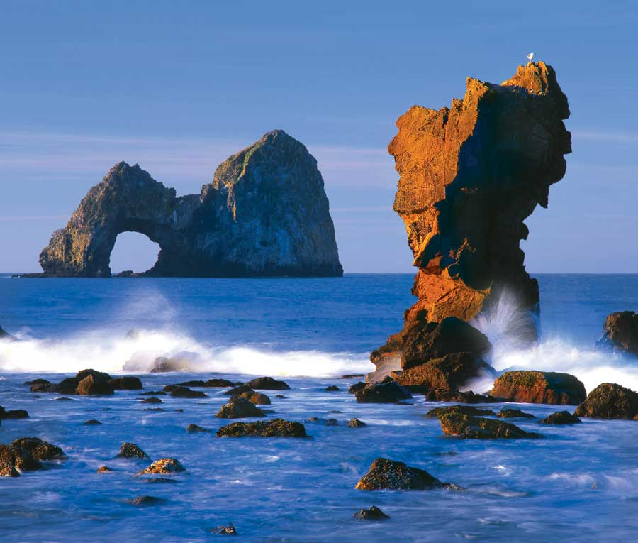
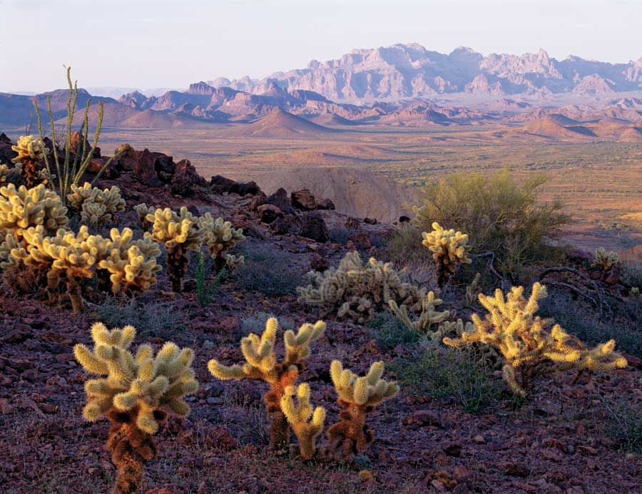
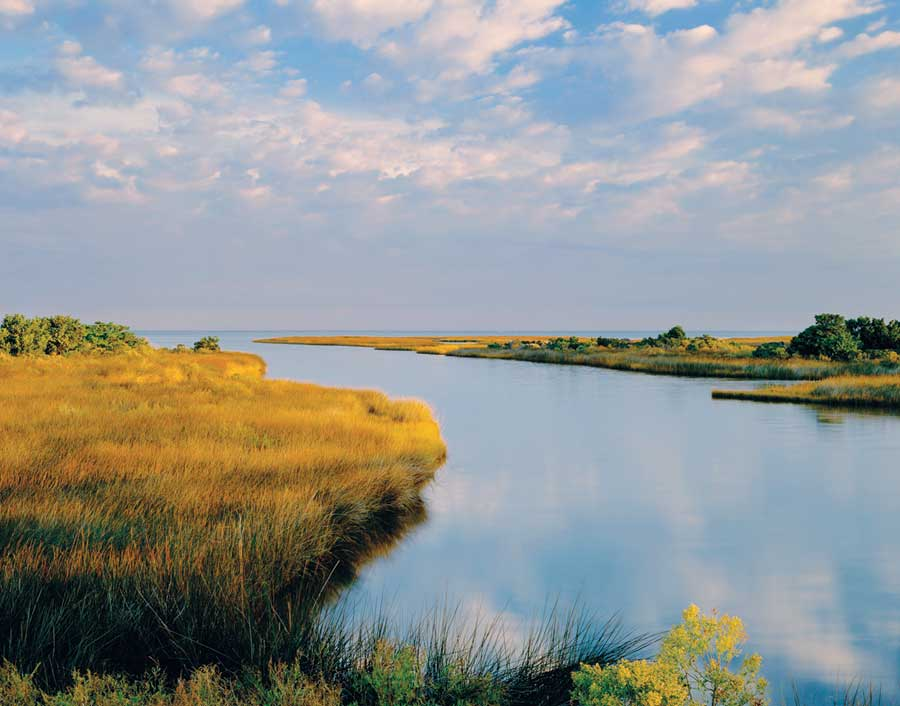
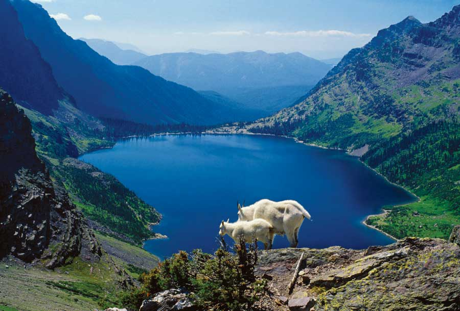
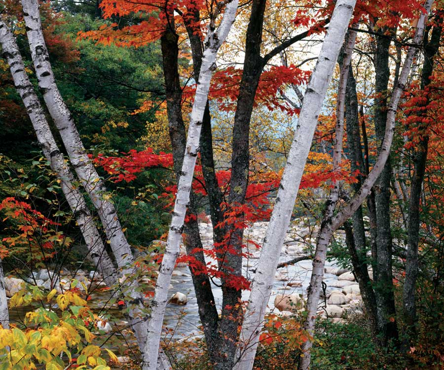
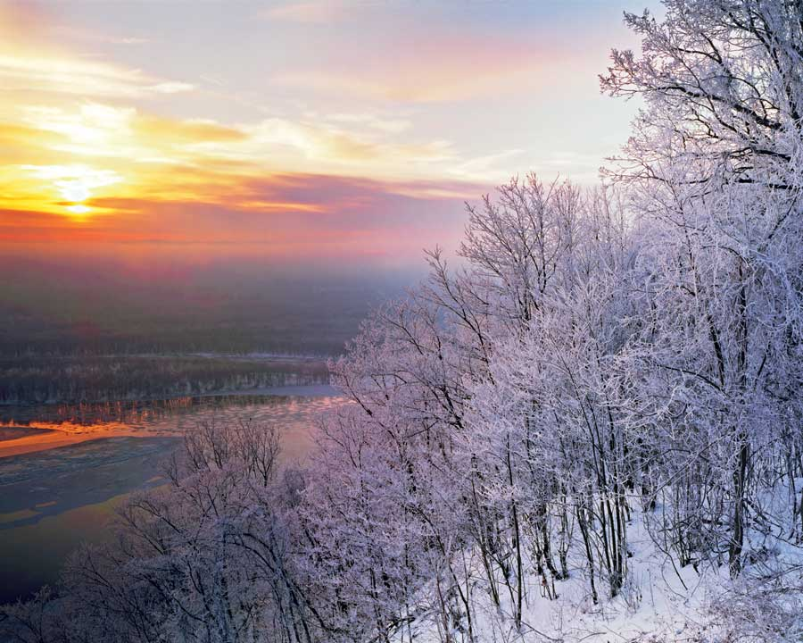
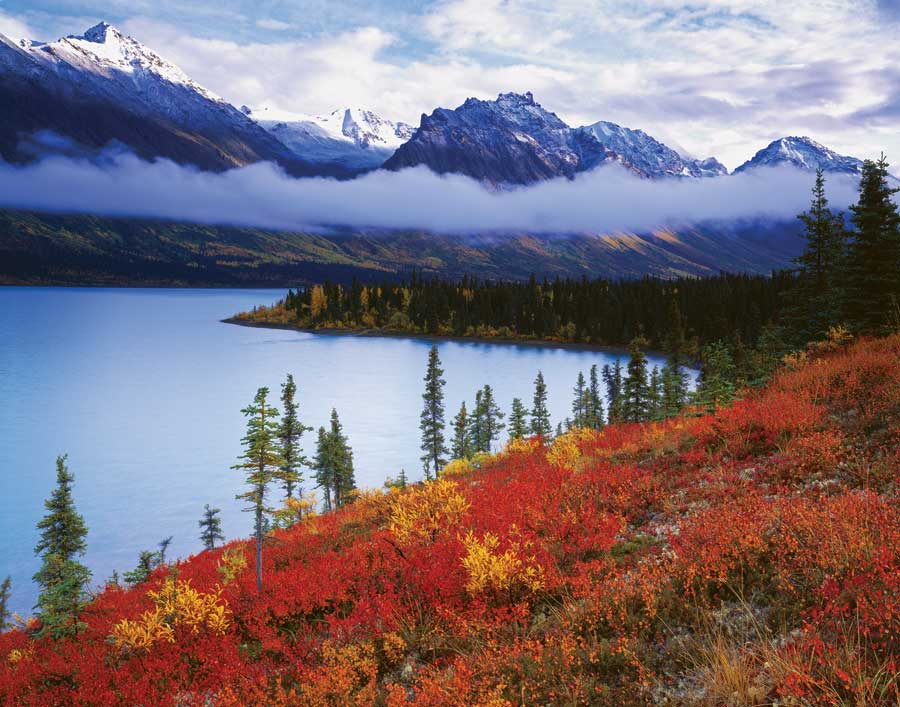
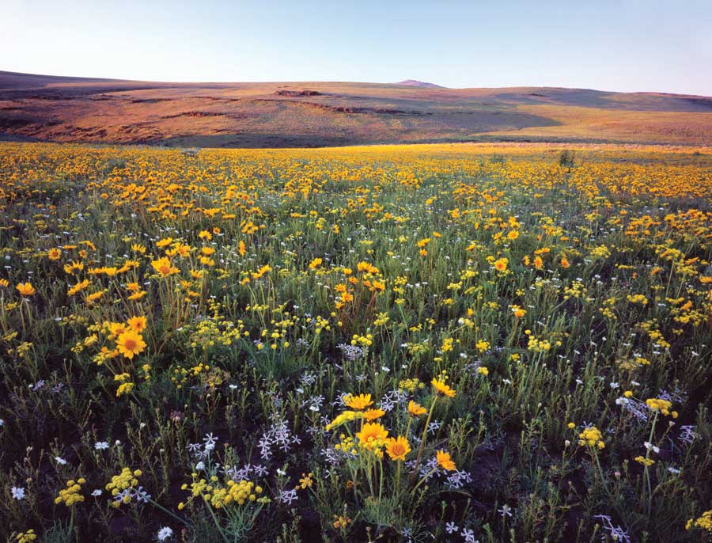

Harvey Broome, co-founder of The Wilderness Society, once said, “If we lose wilderness, we lose forever the knowledge of what the world was and what it might, with understanding and loving husbandry, yet become.”
Since 1935, The Wilderness Society has worked to protect wilderness and inspire Americans to care for wild places. In 1964, The Wilderness Act became law, creating the National Wilderness Preservation System.
Through the wilderness system, Congress sets aside selected areas within national forests, national parks, national wildlife refuges, and other federal lands as areas to be kept permanently unchanged by humans. This means no roads, no structures, no vehicles, no significant impacts of any kind. Of our country’s 623 million public acres, 109 million are permanently protected as wilderness. (Check out this list of wilderness areas.)
Because of the requirements set forth in The Wilderness Act, a visitor to a wilderness area can count on peace and quiet. The air and water are clean. Large, unfragmented and wild landscapes can provide the habitat that species need to adapt to climate change. Places like this are increasingly hard to come by, making the value of wilderness and land preservation more apparent with each passing year.
Want to help The Wilderness Society in its efforts to promote wilderness protection? Become a member by calling 800-843-9453 or signing up at wilderness.org.
We hope you enjoy the striking photographs of wild places in this special photo essay, which you can find in the Image Gallery. If you’d like to see these photos year-round, there’s no better calendar than the one put out by The Wilderness Society each year. As Pulitzer Prize-winning author Wallace Stegner once said, “We simply need that wild country available to us, even if we never do more than drive to its edge and look in. For it can be a means of reassuring ourselves of our sanity as creatures, a part of the geography of hope.” The 2010 Wilderness Society calendar costs just $13.95 and is available by calling 800-258-5830 or visiting wilderness.org. - MOTHER
The public lands listed below contain the 109 million acres of wilderness that have been set aside by the National Wilderness Preservation System.
National Parks Managed by the National Park Service
400 natural, cultural and recreational sites across the nation. The majesty of Yellowstone, the Pueblo people’s cliffs of Mesa Verde, the battlefield at Gettysburg, and Appalachian cabins in the Great Smoky Mountains are just a few of the many national treasures to experience. The American system of national parks was the first of its kind in the world.
National Forests Managed by the Forest Service
193 million acres of forests and grasslands, equivalent to the size of Texas. “America’s Great Outdoors,” in which visitors can backpack, camp, fish and more. National Forests are managed for their water, wildlife, wood and recreation resources.
National Wildlife Refuges Managed by the Fish & Wildlife Service
More than 150 million acres, containing 550 wildlife refuges and 37 wetland management districts. The National Wildlife Refuge System has 100 years of experience in maintaining a network of wildlife habitats, with at least one refuge in each of the 50 states. These refuges set aside habitat for more than 250 threatened or endangered plants and animals .
Bureau of Land Management Land Managed by the Department of the Interior
256 million surface acres (13 percent of the United States’ land surface) make BLM land the largest of the four federal systems. BLM wilderness contains some of the most pristine lands in the United States as part of the National Landscape Conservation System, which protects 27 million acres in western states.
|
 JAMES W. KAY; WWW.JAMESKAY.COM Paria Canyons, Vermilion Cliffs Wilderness, Utah |
 MARY LIZ AUSTIN; WWW.DONNELLY-AUSTIN.COM North Cascades National Park, Washington |
 STEVE TERRILL; WWW.TERRILLPHOTO.COM Oregon Islands National Wildlife Refuge, Oregon |
|
 SCOTT ATKINSON Kofa National Wildlife Refuge, Arizona |
 LARRY ULRICH; WWW.LARRYULRICH.COM Cape Hatteras National Seashore, North Carolina |
 LARRY ULRICH; WWW.LARRYULRICH.COM Glacier National Park, Montana |
|
 CARR CLIFTON; WWW.CARRCLIFTON.COM White Mountain National Forest, New Hampshire |
 TOM TILL; WWW.TOMTILL.COM Upper Mississippi River National Wildlife & Fish Refuge, Iowa |
 FRED HIRSCHMANN; WWW.AGPIX.COM/HIRSCHMANN Lake Clark National Park, Alaska |
|
 SCOTT SMITH; WWW.SEESCOTT.COM Poodle Mountain Wilderness Study Area, Nevada |
|
|